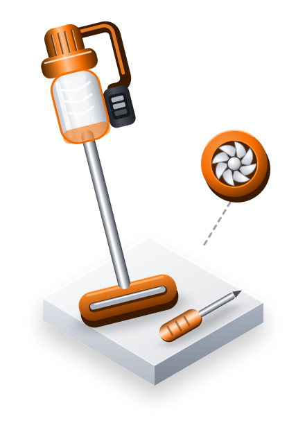
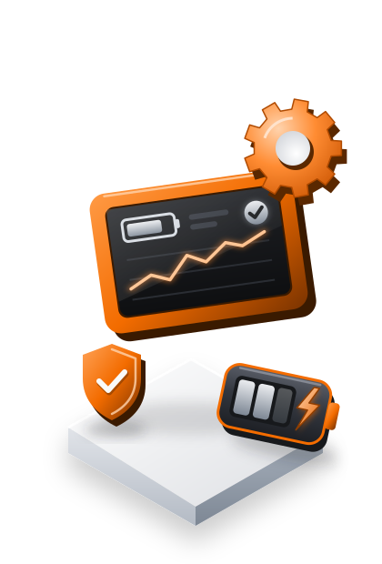
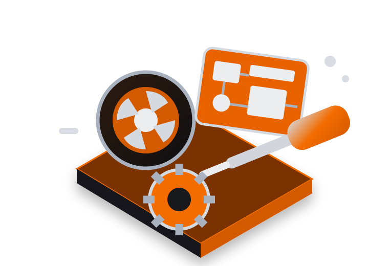

Dyson reparatie in Amsterdam en heel Nederland
Dyson reparatie in Amsterdam met ophalen in heel Nederland
Gratis diagnose
Originele onderdelen
Ophalen in heel Nederland
Ophalen en bezorgen in Nederland · 30 €Wij halen je Dyson op, waar je ook woont
Maandag t/m vrijdag · 09:30–18:00Zaterdag, zondag en feestdagen: gesloten.
Vrijblijvende reparatieofferte
Dyson reparatie met 6 maanden garantie
Dyson reparatie vanaf 2 uur
Als je hem snel nodig hebt
Dyson reparatie vanaf 2 uur, afhankelijk van de storing.
Afhankelijk van de storing. De reparatietijd hangt af van het probleem, de benodigde ingreep en de beschikbaarheid van onderdelen. Eerst controleren we het apparaat en daarna geven we je de opties.
✓
Gratis diagnose.
We kijken wat er aan de hand is voordat je over de reparatie beslist.
We kijken wat er aan de hand is voordat je over de reparatie beslist.
✓
Vrijblijvende offerte.
Je weet precies wat we doen voordat we verdergaan.
Je weet precies wat we doen voordat we verdergaan.
✓
6 maanden garantie.
Op elke uitgevoerde reparatie.
Op elke uitgevoerde reparatie.
Vertrouwen
Ervaringen met onze Dyson reparatieservice in Nederland.
Wat we repareren
Wij repareren Dyson stofzuigers, föhns en luchtreinigers.
Wij repareren Dyson stofzuigers, föhns, luchtreinigers en ventilatoren, in Amsterdam en de rest van Nederland.
Steelstofzuigers
Dyson V12 Detect Slim, V15 Detect, Gen5 Detect, Cyclone V10, V8 Absolute, V7, Omni-glide en PencilVac.
Vloerstofzuigers
Dyson WashG1 voor nat en droog reinigen en Upright- en Cylinder-modellen met snoer.
Föhns
Dyson Supersonic, Supersonic Nural, Supersonic Professional en Supersonic R Series.
Luchtreinigers en ventilatoren
Dyson Purifier Cool, Air Multiplier en Hot+Cool.

Heldere diagnose.
Originele onderdelen.
Ophalen in heel Nederland.
Waarom DysonStation?
Kan hij gerepareerd worden, dan hoor je dat voordat we iets verkopen.
Gratis diagnose
We vertellen je wat er met je Dyson aan de hand is voordat we hem repareren.
Originele Dyson-onderdelen
Geen goedkope namaakonderdelen die na vier maanden alweer stuk zijn.
Ophalen en bezorgen
We halen je Dyson op in heel Nederland en brengen hem gerepareerd bij je terug.
Vrijblijvende offerte
Jij beslist of we repareren, zonder verrassingen op de factuur.
Hoe we werken
Zo werkt onze Dyson reparatieservice.
01
Vertel ons het probleem
Via WhatsApp of het formulier laat je weten welk Dyson-apparaat je hebt en wat er mis mee is.
02
Wij halen je Dyson op
Vraag de ophaalservice aan (30 €) en we halen je apparaat op, waar je ook woont in Nederland.
03
Diagnose en offerte
We controleren het apparaat en vertellen je vrijblijvend wat er nodig is.
04
Reparatie en terugbezorging
We repareren je Dyson, leggen uit wat we gedaan hebben en bezorgen hem weer bij je thuis.
Veelgestelde vragen
Veelgestelde vragen over Dyson reparatie.
Hoe werkt het ophalen en bezorgen?
Je hoeft nergens heen: we halen je Dyson overal in Nederland bij je op en brengen hem gerepareerd terug. Ophalen en bezorgen kost 30 €.
Is de diagnose gratis?
Ja. De eerste diagnose van je Dyson is kosteloos.
Kan hij echt binnen 2 uur gerepareerd zijn?
Dat kan, afhankelijk van de storing. De reparatietijd hangt af van het probleem, de benodigde ingreep en de beschikbaarheid van onderdelen.
Welke Dyson-apparaten repareren jullie?
We repareren steel- en vloerstofzuigers, Supersonic föhns, luchtreinigers en ventilatoren van Dyson.
Krijg ik garantie op de reparatie?
Ja, op al onze reparaties zit 6 maanden garantie.
Is de offerte vrijblijvend?
Ja. Je krijgt de offerte vóór de reparatie en jij beslist of we verdergaan.
Dyson reparatieservice
Dyson reparatie en service in Amsterdam en heel Nederland.
Dyson-apparaten zijn gemaakt voor hoge prestaties en veel storingen zijn goed te repareren. Bij DysonStation stellen we eerst een diagnose voordat je een offerte krijgt, voor stofzuigers, föhns, luchtreinigers en ventilatoren.
We werken aan de V12 Detect Slim, V15 Detect, Gen5 Detect, V10, V8, V7, Omni-glide, PencilVac, WashG1 en Upright- en Cylinder-modellen, en ook aan de Supersonic, Supersonic Nural, Supersonic Professional, Supersonic R Series, Purifier Cool, Air Multiplier en Hot+Cool. Of je nu in Amsterdam, Rotterdam, Utrecht of ergens anders in Nederland woont: we halen je Dyson bij je op.
Heeft je Dyson minder zuigkracht, slaat hij af, laadt hij niet op, maakt hij vreemde geluiden of werkt hij niet meer zoals vroeger? Vertel ons wat er aan de hand is. Eerst zoeken we de oorzaak, daarna krijg je een concrete oplossing zodat je een weloverwogen keuze kunt maken.